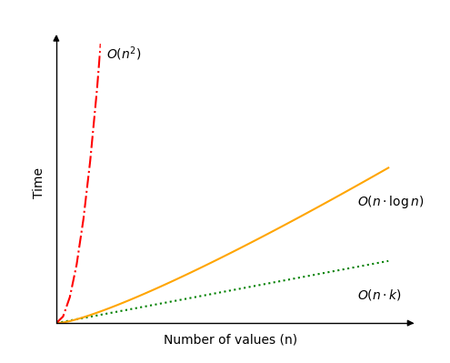

Python 实现的 DSA 基数排序
基数排序
基数排序算法通过逐个处理数字的各个位数（从最低有效位，即最右边的数字开始）来对数组进行排序。
点击按钮，每次对一个位数（数字）进行基数排序。
单击按钮逐步（按位）执行基数排序。
{{ msgDone }}基数（或底数）是数字系统中唯一数字的数量。在通常使用的十进制系统中，有 10 个不同的数字，从 0 到 9。
基数排序利用基数，将十进制值放入 10 个不同的桶（或容器）中，这些桶对应于当前关注的数字，然后在处理下一个数字之前将它们放回数组。
基数排序是一种非比较算法，仅适用于非负整数。
基数排序算法可以这样描述：
工作原理：
- 从最低有效位（最右边的数字）开始。
- 根据当前关注的数字对值进行排序，首先根据当前关注的数字将值放入正确的桶中，然后以正确顺序将它们放回数组。
- 移动到下一个数字，并像在上一步中那样再次排序，直到没有数字剩下。
稳定排序
为了使结果正确排序，基数排序必须以稳定的方式对元素进行排序。
稳定的排序算法是指在排序前后保持相同值的元素的顺序不变的算法。假设我们有两个元素 "K" 和 "L"，其中 "K" 在 "L" 之前，且它们的值都是 "3" 。如果排序后元素 "K" 仍然在 "L" 之前，则认为该排序算法是稳定的。
对于我们之前单独研究的算法来说，讨论稳定排序算法的意义不大，因为无论它们是否稳定，结果都是相同的。但对于基数排序来说，以稳定的方式进行排序非常重要，因为元素每次只按一个数字排序。
因此，在按最低有效位对元素进行排序并移动到下一个数字后，重要的是不要破坏之前在数字位置上已经完成的排序工作，这就是为什么我们需要确保基数排序对每个数字位置以稳定的方式进行排序。
在下面的模拟中，展示了如何将元素排序到桶中。为了更好地理解稳定排序是如何工作的，您还可以选择以不稳定的方式进行排序，这将导致不正确的结果。只需将元素从数组的末尾而不是开头放入桶中，就可以使排序变得不稳定。
Stable sort?
{{ msgDone }}手动演示
让我们尝试手动进行排序，以便在实际使用编程语言实现基数排序之前更好地理解其工作原理。
第 1 步：我们从一个未排序的数组和一个空数组开始，空数组用于容纳对应基数为 0 到 9 的值。
myArray = [ 33, 45, 40, 25, 17, 24] radixArray = [ [], [], [], [], [], [], [], [], [], [] ]
第 2 步：我们从最低有效位开始排序。
myArray = [ 33, 45, 40, 25, 17, 24] radixArray = [ [], [], [], [], [], [], [], [], [], [] ]
第 3 步：现在，我们根据当前关注的数字将元素移动到基数数组中的正确位置。从 myArray 的开头取出元素，并将其推入 radixArray 中的正确位置。
myArray = [ ] radixArray = [ [40], [], [], [33], [24], [45, 25], [], [17], [], [] ]
第 4 步：我们将元素移回初始数组，现在最低有效位的排序已完成。从 radixArray 的末尾取出元素，并将其放入 myArray 的开头。
myArray = [ 40, 33, 24, 45, 25, 17 ] radixArray = [ [], [], [], [], [], [], [], [], [], [] ]
第 5 步：我们将关注点移动到下一个数字。请注意，值 45 和 25 仍然保持它们最初的相对顺序，因为我们是以稳定的方式进行排序的。
myArray = [ 40, 33, 24, 45, 25, 17 ] radixArray = [ [], [], [], [], [], [], [], [], [], [] ]
第 6 步：我们根据当前关注的数字将元素移动到基数数组中。
myArray = [ ] radixArray = [ [], [17], [24, 25], [33], [40, 45], [], [], [], [], [] ]
第 7 步：我们从 radixArray 的末尾将元素移回 myArray 的开头。
myArray = [ 17, 24, 25, 33, 40, 45 ] radixArray = [ [], [], [], [], [], [], [], [], [], [] ]
排序完成！
运行下面的模拟，查看上述步骤的动画演示：
radixArray = [ [
在 Python 中实现基数排序
要实现基数排序算法，我们需要：
- 一个待排序的非负整数数组
- 一个二维数组（索引 0 到 9），用于存放当前位（基数位）对应的数值
- 一个循环，将未排序数组中的数值按当前基数位放入二维基数数组的正确位置
- 一个循环，将基数数组中的数值按顺序放回原数组
- 一个外层循环，循环次数取决于数组中最大值的位数
最终实现的代码如下：
实例
在 Python 程序中使用基数排序算法：
mylist = [170, 45, 75, 90, 802, 24, 2, 66]
print("Original array:", mylist)
radixArray = [[], [], [], [], [], [], [], [], [], []]
maxVal = max(mylist)
exp = 1
while maxVal // exp > 0:
while len(mylist) > 0:
val = mylist.pop()
radixIndex = (val // exp) % 10
radixArray[radixIndex].append(val)
for bucket in radixArray:
while len(bucket) > 0:
val = bucket.pop()
mylist.append(val)
exp *= 10
print(mylist)
在第 7 行，我们使用地板除法（"//"）在 while 循环第一次运行时将最大值 802 除以 1，下一次除以 10，最后一次除以 100。使用地板除法“//”时，小数点后的任何数字都会被忽略，并返回一个整数。
在第 11 行，根据值的基数或当前关注的数字决定将其放在 radixArray 中的哪个位置。例如，外部 while 循环第二次运行时，exp 将为 10。值 170 除以 10 将得到 17。"%10" 操作除以 10 并返回余数。在这种情况下，17 除以 10 余 7。因此，值 170 被放在 radixArray 的索引 7 中。
使用其他排序算法的基数排序
实际上，基数排序可以与任何其他稳定的排序算法一起实现。这意味着，当需要对特定数字进行排序时，任何稳定的排序算法都可以使用，例如计数排序或冒泡排序。
以下是使用冒泡排序对各个数字进行排序的基数排序实现：
实例
使用冒泡排序的基数排序算法：
def bubbleSort(arr):
n = len(arr)
for i in range(n):
for j in range(0, n - i - 1):
if arr[j] > arr[j + 1]:
arr[j], arr[j + 1] = arr[j + 1], arr[j]
def radixSortWithBubbleSort(arr):
max_val = max(arr)
exp = 1
while max_val // exp > 0:
radixList = [[],[],[],[],[],[],[],[],[],[]]
for num in arr:
radixIndex = (num // exp) % 10
radixList[radixIndex].append(num)
for bucket in radixList:
bubbleSort(bucket)
i = 0
for bucket in radixList:
for num in bucket:
arr[i] = num
i += 1
exp *= 10
mylist = [170, 45, 75, 90, 802, 24, 2, 66]
radixSortWithBubbleSort(mylist)
print(mylist)
基数排序的时间复杂度
基数排序的时间复杂度为：\( O(n \cdot k) \)。
这意味着基数排序既取决于需要排序的值 \(n\)，也取决于最高值中的数字位数 \(k\)。
基数排序的最佳情况是，如果有大量值需要排序，但这些值的数字位数很少。例如，如果有超过一百万个值需要排序，且最高值为 999，只有三位数字。在这种情况下，时间复杂度 \(O(n \cdot k)\) 可以简化为 \(O(n)\)。
基数排序的最坏情况是，如果最高值中的数字位数与需要排序的值数量相同。这可能不是一个常见的情况，但在这种情况下，时间复杂度将是 \(O(n^2)\)。
最平均或最常见的情况可能是，如果数字位数 \(k\) 类似于 \(k(n)= \log n\)。如果是这样，基数排序的时间复杂度为 \(O(n \cdot \log n )\)。例如，如果有 1000000 个值需要排序，且这些值有 6 位数字。
请参见下图中的基数排序的不同可能时间复杂度。
